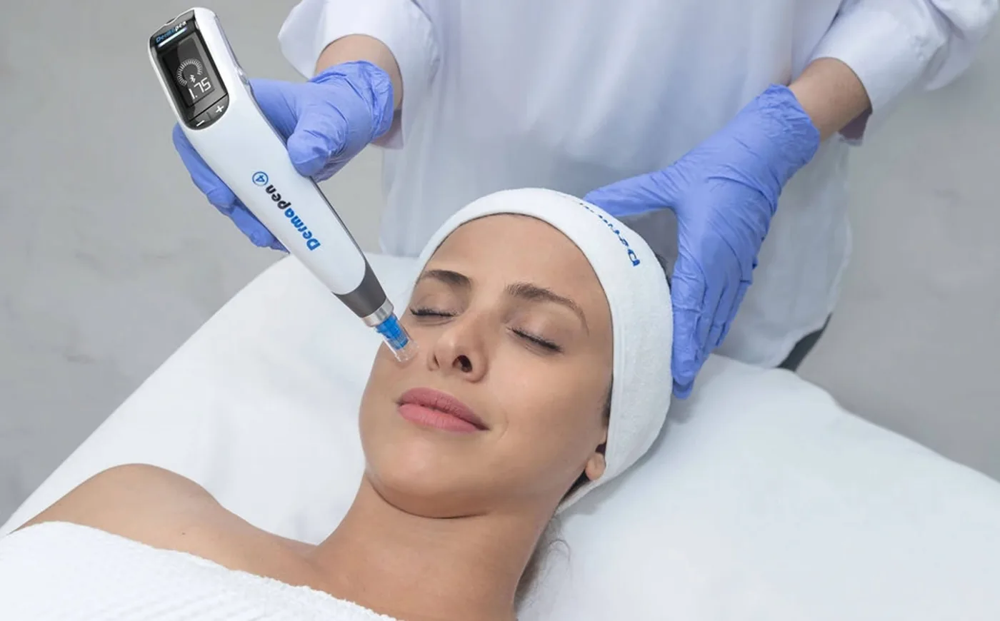
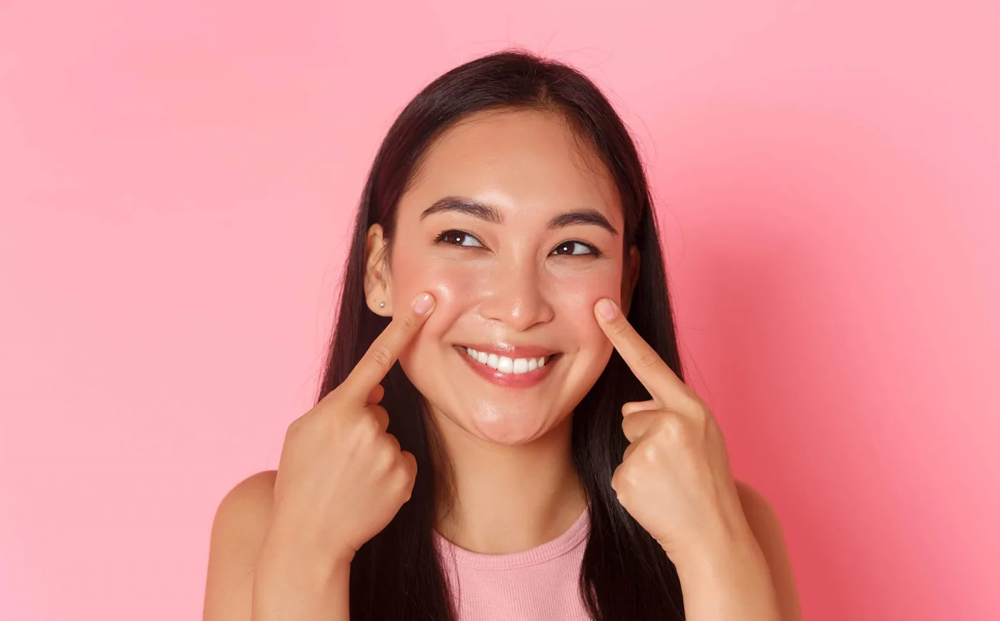

Cure acne scars, improve texture, reduce pores, and more! 6-in-1 magic skin treatment!
If you’re here, chances are, the protruding red bumps that can never seem to go away and inflamed acne marks on your skin have become the main reason for your low self-esteem, am I right? I totally get you! It’s not like you want to achieve “flawlessness”, but you just want to have normal skin, just like everybody else. Being able to walk around without having people staring and judging for how we look. I’m here with you, sis.
They say acne is all about diet. “Drink tons of water, eat vitamin c, consume this, consume that!” You’ve done it all, yet you see no improvement. I understand your frustrations. All these dietary supplements are not cheap, yet they promise no prominent results. So you’re just breaking your bank for a “treatment” that can’t secure your future. What’s the point?
BUT, if you want the best acne treatment that can almost 200% fasten your healing process, you might want to read through this! This is one of my top secrets! I’ve recommended this to many of my patients, and they walked out of the clinic feeling more gorgeous than ever!
I can guarantee you it’ll only take 7 minutes. Or even better, bookmark this and read it when you’re on Lunch Break or at home with a nice cup of hot tea. So, without wasting any more seconds, let’s start!

Microneedling is the most revolutionary facial treatment suitable for many skin issue.
Dermapen 4 Microneedling: Magical 6-in-1 Skin Natural Healing Treatment
Ever heard of microneedling? Well, chances are, you might have, and I can guess that you are either love the idea or fear it. I wouldn’t blame you because having tiny needles poking your skin thousands of times in a minute? Sounds terrifying and painful!
BUT, guess what? It’s the TOTAL OPPOSITE!
Dermapen 4 Microneedling is a revolutionary automated micro-needling device that creates controlled (I emphasized, controlled) micro-injuries of the skin’s surface to jumpstart healing response and collagen production naturally. It creates healthy glowing skin with minimal downtime. Microneedling has become one of the most sought-after skin treatments in the world for the past 5 years for a reason; that is its efficiency in treating over 80 clinical indications in a single treatment.
Microneedling helps cure acne marks, acne scars, fines lines, pigmentation skin, keratosis pilaris, keloid, stretch marks, rosacea, enlarged pores, oily skin, and so much more!
How is this possible? Well, microneedling enhances your natural biological healing abilities, hence making your body accelerate its skin turnover rate, which instantaneously helps resolve all skin issues you are dealing with! Talk about a miracle! By this point, there must be some of you that might be skeptical about this. Well, before I dive more into the hundreds of good things about microneedling treatment, let’s understand better about acne.
Skin issues are caused by many factors and it’s important to know the root cause for treatments to be effective.
Roots of Acne, Wrinkles, Dullness, Skin Scarring, and Redness.
Skin type is hereditary, so different people are born with different skins. Even if you are blood-related, let’s say siblings, there are not two of you that will have a similar skin type. One person can have super dry skin, while another is blessed with an ever glowing complexion full of natural sebum and oil all over the face. Though everyone was born with perfectly balanced skin pH, it is the hormonal, environmental, and other factors that make your skin lackluster, pigmented, and prone to more acne breakouts.
- Hormonal factors: Puberty, adolescence, pregnancy, menstruation, etc.
- Environmental factors: Weather, pollution, exposed daily environment, work, sports, activities, etc.
- Unsuitable skincare products
- Medications
- Side effects from improper practices of lasers or any aesthetic treatments
- Aging starts as early as 27 years old so wrinkles and skin dullness may become accelerated naturally once u hit this age regardless of what environment you are in.
With all the causes to skin issues, how can you treat it?
So, How Can Dermapen 4 Microneedling Help Solve the Problems Above?
Long story short, I call it “Collagen Induction Therapy“. Each time you go through a Dermapen 4 procedure, your skin’s natural healing and repair process is being initiated. Through the tiny controlled skin injury inflected, your organic collagen and elastin are stimulated. From there, the natural skins growth factors will be released from the blood’s plasma, and over time, the skin shall repair and renew by itself
Dermapen 4 Microneedling can help target your skin concern in the most effective and safest way. You’ll notice results straight away!
Noticeable Results You Can See?
After recovering from the downtime, along with several post-treatment cares, skin becomes healthier, acne breakouts lessen, pigmented brown spots lightened, scars and fine lines are less, and skin texture is improved tremendously! The skin’s turgor is improved and skin becomes firmer and not as lax as pre-treatment.
These results vary depending on skin condition, problems, age, and the number of sessions done.
Combining Dermapen 4 Microneedling with a proper skin care regimen, it’s like indulging your skin with tons of apples and oranges vitamins goodness. Dermapen 4 Mirconeedling boosts collagen induction and skincare helps deliver active substances on the topical layer of the skin. As a result, the skin will become beautiful inside-out! Love!
Dermapen 4 Microneedling targets multiple skin concerns so anyone can benefit from this treatment.
Who is Suggested to Get This Treatment?
Everyone! Even teenagers. Everyone can get this treatment and walk away with tons of benefits. Almost 99.9% of my patients and customers have shown marvelous results and are very happy with the treatment. So, those who want to tackle the issues below can immediately ask for Dermapen 4:
- Acne
- Skin scarring
- Wrinkled skin with fine lines and irregular skin texture
- Pigmented skin
- Dullness, loss of radiance
- Matured aging skin
- Blotchy complexion
- Rosacea – facial blushing
- Stretch marks

Patients are clearly pleased after Dermapen 4 Microneedling treatment, notice improvements with their skin’s health and appearances.
My Patients Love the Results, and So Will You!
I can confidently say that patients I’ve recommended in getting this treatment, loooovee how supple their skin looks after 2 weeks! Their skin scarrings improved, skin is more even tone, firmer and less wrinkly. In the long run, skin is plumper, firmer, and generally healthier.
So, if you are interested in getting Dermapen 4 Microneedling from Dr. Abby Clinic—#1 Best Reviewed Aesthetic Clinic in Malaysia—come for our skin analysis and consultation. I will help you transform your insecurities into your ultimate confidence! Contact us now to book an appointment.
See you soon, beautiful!
Dr Abby
Categories
Related treatments